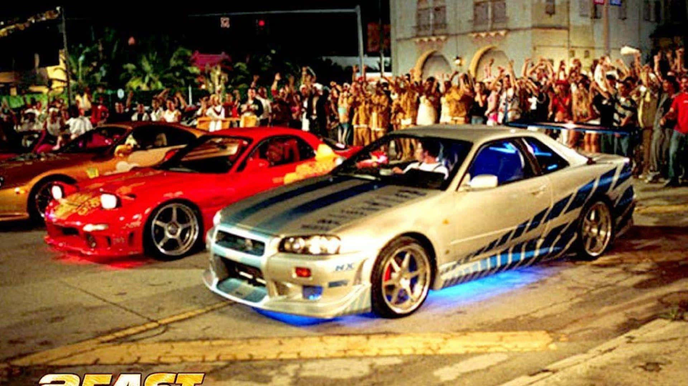
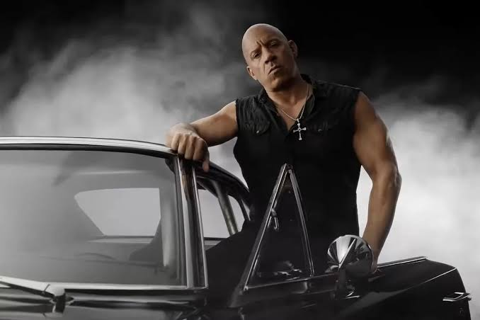
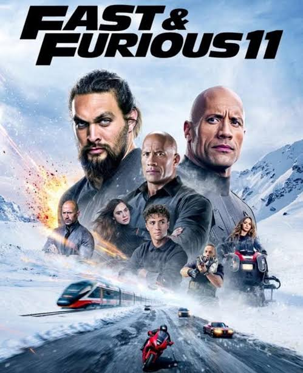

se você gosta de carros potentes, corridas emocionantes e cenas de ação, a saga velozes e furiosos é perfeita para você. com personagens marcantes, histórias envolvesntes e muita adrenalina, A franquia conquistou milhões de fãs ao redor do mundo se tornando uma das franquias mais famosas do cinema. -
O primeiro filme da franquia foi lançado em 2001 e apresentou ao público o mundo das corridas de rua. Desde então, Velozes e Furiosos cresceu cada vez mais, ganhando diversas continuações e conquistando fãs em vários países.
Um dos personagens mais conhecidos da franquia é Dominic Toretto, interpretado por Vin Diesel. Ele é o líder do grupo e está presente em grande parte dos filmes, sempre ajudando seus amigos e enfrentando novos desafios.

também Uma coisa que chama atenção em Velozes e Furiosos é a importância dada à família. Durante toda a saga, os personagens mostram que podem contar uns com os outros nos momentos mais difíceis.

Os filmes mudaram bastante desde o primeiro lançamento. No início, a história era mais focada em corridas de rua, mas com o passar do tempo a franquia passou a mostrar missões maiores e cenas de ação cada vez mais impressionantes.
Brian O'Conner também é um personagem muito importante para a saga. Interpretado por Paul Walker, ele participou de vários filmes e conquistou o carinho de muitos fãs ao redor do mundo.
Em 2013, Paul Walker faleceu em um acidente de carro. A notícia deixou muitos fãs tristes, mas seu personagem continua sendo lembrado e homenageado pelos filmes da franquia.

Além da história e dos personagens, os carros também são uma parte muito importante da franquia. Durante os filmes, diversos modelos famosos aparecem em corridas, perseguições e cenas de ação que ficaram marcadas entre os fãs.
Por todos esses motivos, Velozes e Furiosos se tornou muito mais do que uma série de filmes sobre carros. A franquia criou personagens inesquecíveis, emocionou milhões de pessoas e deixou uma marca importante na história do cinema.